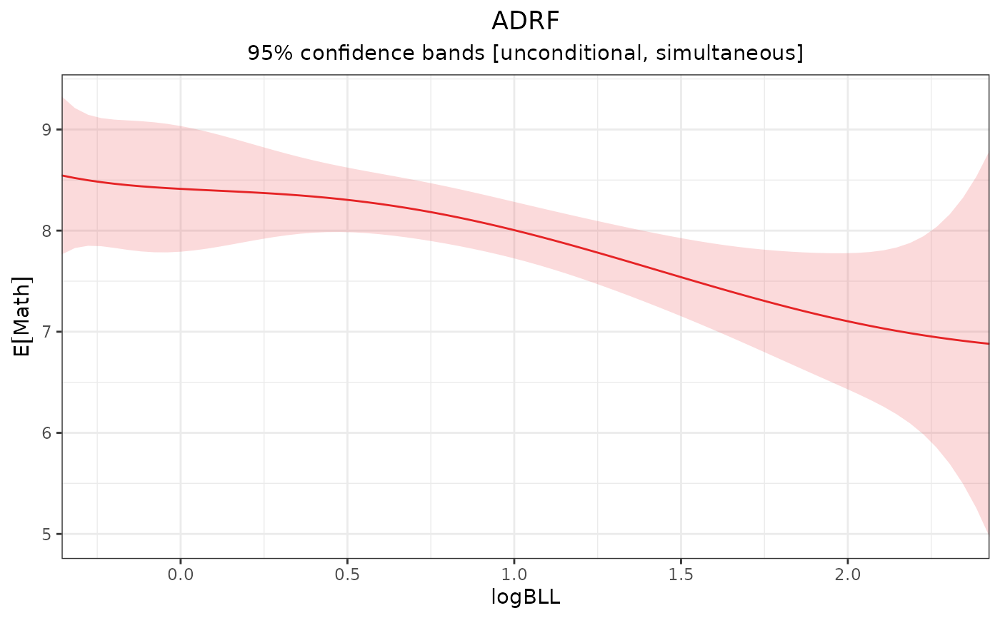
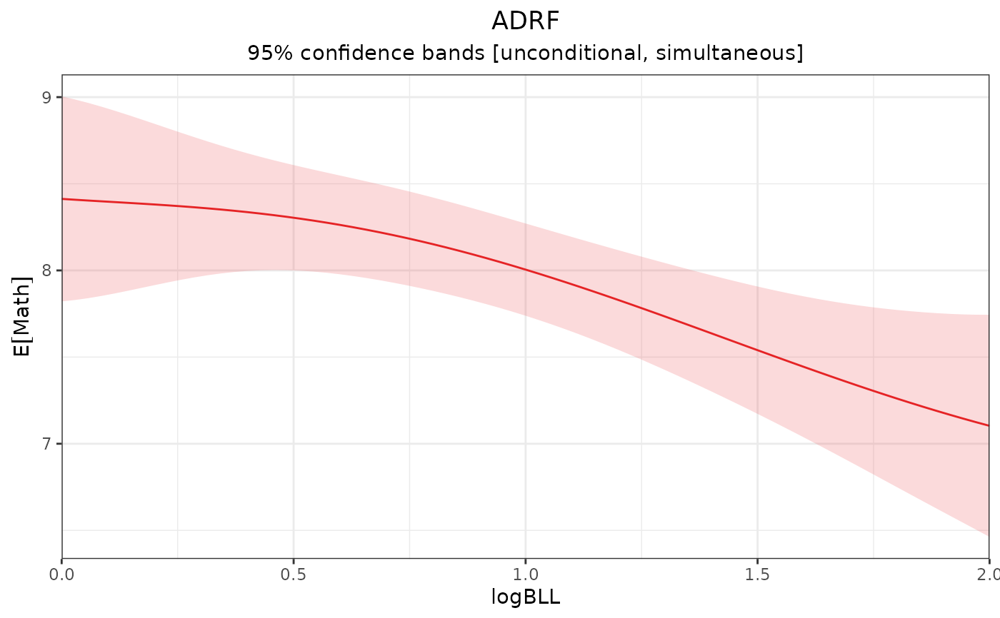

Estimates the average dose-response function (ADRF) for a fitted model object.
Usage
adrf(x, ...)
# Default S3 method
adrf(
x,
treat,
vcov = "unconditional",
cluster = NULL,
type = "response",
data = NULL,
subset = NULL,
by = NULL,
wts = NULL,
range = 0.95,
n = 71,
fwb.args = list(),
...
)Arguments
- x
- ...
further arguments passed to
marginaleffects::get_predict().- treat
a string specifying the name of the treatment variable.
- vcov
how the covariance matrix of the estimates should be computed. If
"unconditional"(default), use the sandwich estimator including sampling uncertainty. If"boot"or"fwb", use the traditional or fractional weighted bootstrap, respectively (both of which require the fwb package to be installed). Otherwise, may be a covariance matrix or other allowed input to thevcovargument ofmarginaleffects::get_vcov(). Can also be"none"to avoid computing the uncertainty.- cluster
an optional data frame or one-sided formula with the clustering terms for cluster-robust inference.
- type
character string indicating the type of prediction. Passed to
marginaleffects::get_predict(). Default is"response"for predictions on the scale of the outcome variable. Other options might include"link"for the linear predictor. This argument is ignored forlmobjects.- data
an optional data frame containing the observations originally used to fit the outcome model supplied to
x. This should only be used if the supplied model is not supported by insight. In most cases, this should not need to be supplied.- subset
an optional logical expression indicating the subset of data to use for estimation. Will be evaluated in the environment of the original dataset supplied to the model fitting function.
- by
optional variable(s) over which to group the estimation. Can be a character vector or one-sided formula.
- wts
optional numeric vector of weights to generalize the effect curve to a weighted population.
- range
numeric; a numeric vector corresponding either to the lower and upper bounds of the treatment values for which to compute the affect curve or a single number corresponding to the middle quantile of the treatment. Default is .95 to use the .025 and .975 quantiles of the treatment. See Details.
- n
integer specifying the number of equally spaced grid points on which to compute the effect curve anchor points. Default is 70; higher numbers increase computation time and size of the resulting object but improve accuracy.
- fwb.args
an option list of arguments to be passed to
fwb::fwb()whenvcovis"boot"or"fwb".
Value
An object of class effect_curve. This object is a function with attributes. See effect_curve for details on this function and its outputs.
Details
adrf() estimates the ADRF by computing average predicted outcomes in the sample for counterfactual treatment values, optionally stratified by grouping variables and accounting for estimation uncertainty via unconditional or conditional variance estimation or bootstrapping. Unconditional variance estimation and bootstrapping treat the sample as random. When vcov = "unconditional", the variance is computed using the formula in Hansen et al. (2024), which involves augmenting the influence function with a term to account for sampling from the superpopulation. Unconditional variance estimation requires sandwich::estfun() and sandwich::bread() methods for the supplied object to be available.
When a mira object from mice or a mimira object from MatchThem is supplied, analyses are applied to each imputed dataset and pooled using Rubin's rules. Bootstrapping is not allowed with such objects.
When a svyglm object from survey is supplied, adrf() automatically incorporates the survey weights extracted from the object. The same is true for glm_weightit objects, etc., from WeightIt when s.weights are supplied in the original call to weightit(). See vignette("adrftools") for more details on using the wts argument.
range
The range argument controls for which range of the treatment the effect curve is to be evaluated. It can be supplied either as two numbers corresponding to the lower and upper bounds for the treatment (e.g., range = c(0, 10)) or as a single number corresponding to the middle quantile of the treatment (e.g., range = .9, which uses the .05 and .95 quantiles of the treatment as the bounds). The default is .95 to use the .025 and .975 quantiles of the treatment. When supplied as a quantile, the quantiles are evaluated incorporating the weights supplied to wts.
A reason not to use the full treatment range (e.g., by setting range = 1) is that there is likely very little certainty about the effect curve at the treatment extremes. This uncertainty can muddy tests of the effect curve. However, limiting the treatment range means inferences about the effect curve are less generalizable to more extreme values of the treatment. Note that this does not change the data used to fit the effect curve, just the points along the effect curve for which inference and estimation are to take place.
See also
plot.effect_curve()for plotting the ADRFsummary.effect_curve()for testing hypotheses about the ADRFeffect_curvefor computing point estimates along the ADRFcurve_projection()for projecting a simpler model onto the ADRFreference_curve()for computing the difference between each point on the ADRF and a specific reference pointcurve_contrast()for contrasting ADRFs computed within subgroupsamef()for computing the average marginal effect function (AMEF), the derivative of the ADRFmarginaleffects::avg_predictions()for computing average adjusted predictions for fitted models (similar to the ADRF)
Examples
data("nhanes3lead")
fit <- lm(Math ~ poly(logBLL, 5) *
Male * (Age + Race + PIR +
Enough_Food),
data = nhanes3lead)
# ADRF of logBLL on Math, unconditional
# inference
adrf1 <- adrf(fit, treat = "logBLL")
adrf1
#> An effect_curve object
#>
#> - curve type: ADRF
#> - response: Math
#> - treatment: logBLL
#> + range: -0.3567 to 2.4248
#> - inference: unconditional
#>
#> Use `plot()` (`?adrftools::plot.effect_curve()`) to plot the curve, `summary()` (`?adrftools::summary.effect_curve()`) to test the curve, or `{object}(values)` (`?adrftools::effect_curve-class()`) to compute estimates.
## Plot the ADRF
plot(adrf1)

## ADRF estimates at given points
adrf1(logBLL = c(0, 1, 2)) |>
summary()
#> ADRF Estimates
#> ──────────────────────────────────────────
#> logBLL Estimate Std. Error CI Low CI High
#> 0 8.413 0.2206 7.887 8.939
#> 1 8.005 0.0993 7.768 8.241
#> 2 7.103 0.2390 6.533 7.673
#> ──────────────────────────────────────────
#> Inference: unconditional, simultaneous
#> Confidence level: 95% (t* = 2.385, df = 2437)
# ADRF of logBLL on Math, unconditional
# inference; manual range
adrf2 <- adrf(fit, treat = "logBLL",
range = c(0, 2))
adrf2
#> An effect_curve object
#>
#> - curve type: ADRF
#> - response: Math
#> - treatment: logBLL
#> + range: 0 to 2
#> - inference: unconditional
#>
#> Use `plot()` (`?adrftools::plot.effect_curve()`) to plot the curve, `summary()` (`?adrftools::summary.effect_curve()`) to test the curve, or `{object}(values)` (`?adrftools::effect_curve-class()`) to compute estimates.
plot(adrf2)

# ADRF of logBLL on Math, bootstrap
# inference
if (FALSE) { # \dontrun{
adrf_b <- adrf(fit, treat = "logBLL",
vcov = "fwb")
adrf_b
plot(adrf_b)
} # }
# ADRF in subset
adrf_m <- adrf(fit, treat = "logBLL",
subset = Male == 1)
adrf_m
#> An effect_curve object
#>
#> - curve type: ADRF
#> - response: Math
#> - treatment: logBLL
#> + range: -0.3567 to 2.4248
#> - inference: unconditional
#>
#> Use `plot()` (`?adrftools::plot.effect_curve()`) to plot the curve, `summary()` (`?adrftools::summary.effect_curve()`) to test the curve, or `{object}(values)` (`?adrftools::effect_curve-class()`) to compute estimates.
# ADRFs in subgroups
adrf_by <- adrf(fit, treat = "logBLL",
by = ~Male)
adrf_by
#> An effect_curve object
#>
#> - curve type: ADRF
#> - response: Math
#> - treatment: logBLL
#> + range: -0.3567 to 2.4248
#> - by: Male
#> - inference: unconditional
#>
#> Use `plot()` (`?adrftools::plot.effect_curve()`) to plot the curve, `summary()` (`?adrftools::summary.effect_curve()`) to test the curve, or `{object}(values)` (`?adrftools::effect_curve-class()`) to compute estimates.